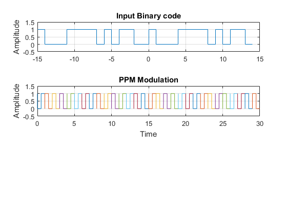
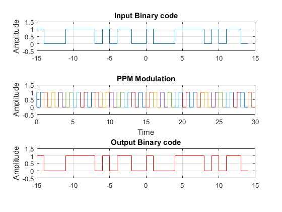

Contents
Section A
pnSequence1 = comm.PNSequence('Polynomial',[4 3 0], ...
'SamplesPerFrame',30,'InitialConditions',[0 0 0 1]);
Binary_Random_Input = pnSequence1();
[Binary_Random_Input(1:15) Binary_Random_Input(16:30)]
figure
subplot(3,1,1);stairs([-length(Binary_Random_Input)/2:length(Binary_Random_Input)/2-1],Binary_Random_Input);
axis([-length(Binary_Random_Input)/2 length(Binary_Random_Input)/2 -0.5 1.5]);title('Input Binary code');grid on; ylabel('Amplitude');
b = Binary_Random_Input;
l=length(b); b(l+1)=0; n=1; duty = 0.5;
OUT = [];
while n<=l
t=(n-1):.001:n;
if b(n)==0
y = (t<n-(1-duty) & t>(n-1));
OUT = [OUT y];
else
y = ~(t<n-(1-duty) & t>(n-1));
OUT = [OUT y];
end
subplot(3,1,2);plot(t,y); hold on; grid on; axis([0 30 -0.5 1.5]);
n=n+1;
end
title('PPM Modulation'); xlabel('Time'); ylabel('Amplitude'); hold off;
ans =
1 1
0 0
0 0
0 0
1 1
1 1
1 1
1 1
0 0
1 1
0 0
1 1
1 1
0 0
0 0

Section B
PWM_Dem_Integrated_first = 0*Binary_Random_Input;
PWM_Dem_Integrated_last = 0*Binary_Random_Input;
ppm = OUT;
for k = 1:length(Binary_Random_Input)
PWM_Dem_Integrated_first(k) = sum(ppm((k-1)*1000+1:k*1000-500))/(500);
PWM_Dem_Integrated_last(k) = sum(ppm((k-1)*1000+500:k*1001))/(500);
end
output_PWM_dem = (PWM_Dem_Integrated_first < PWM_Dem_Integrated_last)'
subplot(3,1,3);stairs([-length(output_PWM_dem)/2:length(output_PWM_dem)/2-1],output_PWM_dem,'r');
axis([-length(output_PWM_dem)/2 length(output_PWM_dem)/2 -0.5 1.5]);title('Output Binary code');grid on; ylabel('Amplitude');
output_PWM_dem =
1×30 logical array
Columns 1 through 19
1 0 0 0 1 1 1 1 0 1 0 1 1 0 0 1 0 0 0
Columns 20 through 30
1 1 1 1 0 1 0 1 1 0 0
